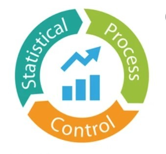

What I Learned During Internship (QE)
-

SPC
Statistical Process Control is used to monitor and control production processes using data. -

Control Chart
Used to identify variation with UCL, LCL, and CL to ensure process stability. -

In-Process QC
Quality checks during production to ensure products meet specifications. -

Root Cause Analysis
Identify the main cause of defects using methods like 5 Why or Fishbone Diagram. -

FMEA
Failure Mode and Effects Analysis helps identify risks and prevent defects. -

Inspection
Checking product quality using measurement tools and standards.